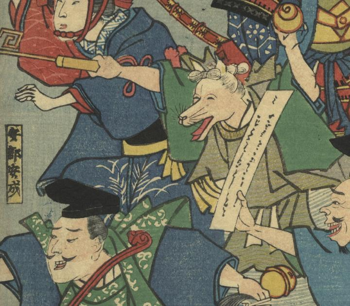

← 图鉴索引

千代田稲荷大明神が着物を着て笑っている。
著作者：芳虎／出典：親書誌：U426_nichibunken_0405：古今こん悪狐退治 ；ココン コン アクコ タイジ／日付：2015／資源識別子：U426_nichibunken_0405_0001_0003
Copyright (c)2010- International Research Center for Japanese Studies, Kyoto, Japan. All rights reserved.